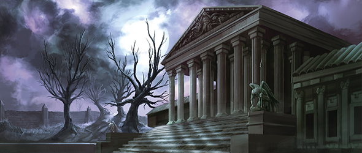
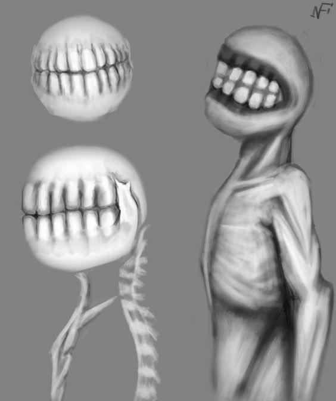
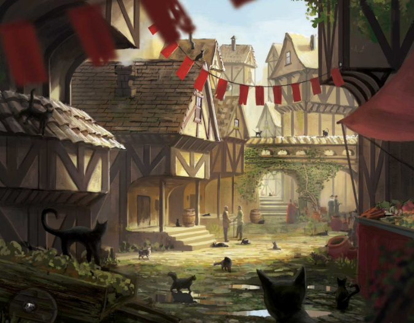
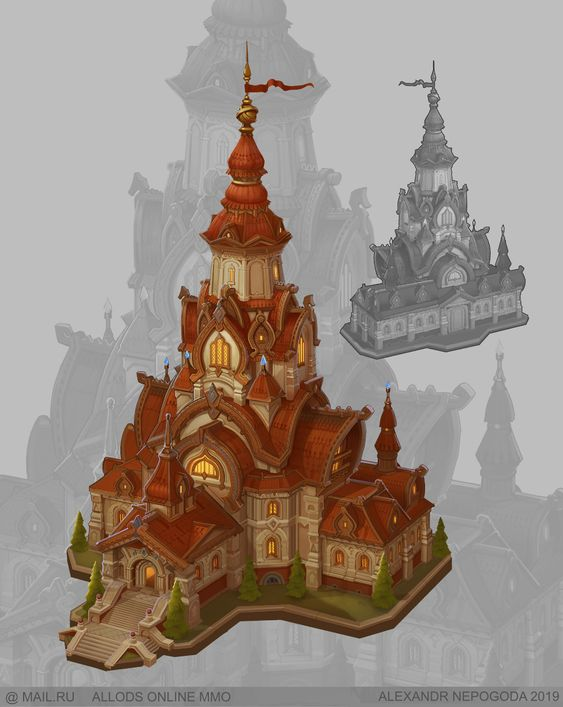

Gelderland: La venganza
Lugares De Importancia visitados
Nir, "ciudad asediada"

Nir,la ciudad asediada
"Aquellos que deseen descubrir los grandes secretos de la magia, vienen a Nir
Placa de el Aula Magna "Anuk"
Antes de la convergencia
Nir era una ciudad pequeña, de las mas antiguas en el mundo del que proviene. Su poblacion no supero nunca los 2000 habitantes pero siempre se vio mas poblada por la cantidad de visitantes que tenia. Esto se dio debido a que, antaño, su escuela de magia "La gran academia de Nir" era frecuentada por estudiantes de todo el mundo
Colegio de Nir
El hecho de que no estubieran densamente poblados, se debia a que miembros de otras razas, que no fueran las nativas de la misma ciudad, se les era prohibido recidir alli de forma permanente.
No se sabe bien el por que de esta prohibicion mas que el hecho de que la gente que siempre goberno en la ciudad no veia con buenos "ojos" la permanencia de extranjeros en la ciudad.
Gran raza de Nir
Despues de la convergencia
Luego del evento cosmico que fue la convergencia, Nir fue de las pioneras en instruir a las razas de el nuevo mundo al que llegaron en la lucha contra los antiguos.
Por desgracia ,años despues, la caida de la ciudad se convirtio en algo inevitable y paso de ser una ciudad llamativa, a ser una en constante asedio, lo que conllevo a que en la actualidad se le diera el epiteto de "ciudad asediada"
Actualidad
Actualmente el lugar en el que la ciudad se encontraba ahora es un crater, ya que al parecer fue destruida por las fuerzas de los dioses.
Volver arribaUlthar
"La semana siguiente, el burgomaestre decidió vencer sus miedos y llamar a la silenciosa morada, como un asunto del deber, aunque fue cuidadoso de llevar consigo, como testigos, a Shang, el herrero, y a Thul, el cortador de piedras. Y cuando hubieron echado abajo la frágil puerta sólo encontraron lo siguiente: un esqueleto humano limpiamente descarnado sobre el suelo de tierra, y una variedad de singulares insectos arrastrándose por las esquinas sombrías."
"Fragmento de la leyenda que explica la presencia de gatos pensantes de Ulthar"
Antes de la convergencia:
Ulthar siempre fue una ciudad cosmopolita, miembros de todas las razas se aglomeraban en ella, ya que era el centro de culto de la diosa Bast. La relacion con esta diosa es de suma importancia, ya que al parecer, ella es la unica que es realmente bondandosa y busca hacer el bien de forma activa.
La ciudad ah sido gobernada desde siempre por un consejo de 4 integrantes, los cuales son expertos en cada uno de los campos que profesan, aunque casi siempre son los mismos: alquimia, botica y herboristeria como un todo, artes magicas, Magia Sagrada y guerra.
En algun punto, luego de una gran guerra contra los antiguos, el consejo utilizo magia albergada entre los manuscritos Pnakoticos (tabla de hechizos de magia antigua y poderosa proveniente de los dioses) para conseguir la inmortalidad a traves de la reencarnacion. El unico problema es que a partir del primer ciclo de nueva vida, no recordarian nada de la vida antes de hacer el pacto. Esto, actualmente conllevo al problema de la caida de la misma.
Despues de la convergencia
Gracias al poder del consejo, la ciudad fue la que menos se afecto despues del evento cosmico. Esto se dio asi debido a que el poder conjuto del consejo, con ayuda de su diosa ayudo a formar dos barreras magicas dentro de la ciudad.
Estas barreras tienen el centro de su poder en el edificio que alberga al consejo y son practicamente impenetrabes desde fuera si se es poseedor de energia antigua.
Gracias a esto, Ulthar se denomino como la ciudad mas segura del mundo para aquellos que solo quieren vivir una vida en paz y sin miedo.
Salon del consejo
Actualidad:
Ironicamente, Ulthar fue conquistada despues de una trama compleja de traiciones por parte de un miembro del consejo. El cual fue malvado desde el principio
Ahora una parte de los habitantes de la ciudad fue transportada a un bosque anonimo por una miembro del consejo. y sus integrantes buscan establecerse con el gremio de cazadores para, asi ver si pueden establecerse en otro lugar.